Home is the first thing you see when you open Luminous — a running snapshot of your library that updates itself as you listen. Luminous plays the music already on your computer, and you don't need a library to start. With nothing added yet, the welcome screen leads with Play music: Open Files, Play a Folder, or drop files straight onto the window.
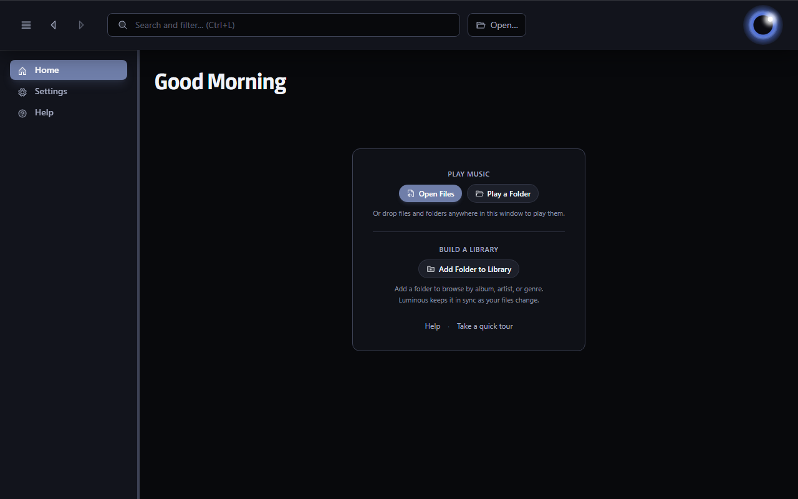
When you're ready to keep your music organized, choose Add Folder to Library under Build a library — or follow these steps. Point Luminous at a folder once, and it keeps watching for new files from then on.
1
Open Settings → Sources and add the folder your music lives in.
2
Luminous scans it and then keeps watching — drop a new album in and it shows up on its own.
3
Everything lands under Collection in the sidebar, sorted into Artists, Albums, and Songs.
4
Moved or renamed a file on disk? Luminous notices the change on its own and updates your library — no rescan needed.
Top Albums on Home ranks albums by minutes played in your local week, following the Start the week with setting. Albums returning to the chart get a Re-entry badge.
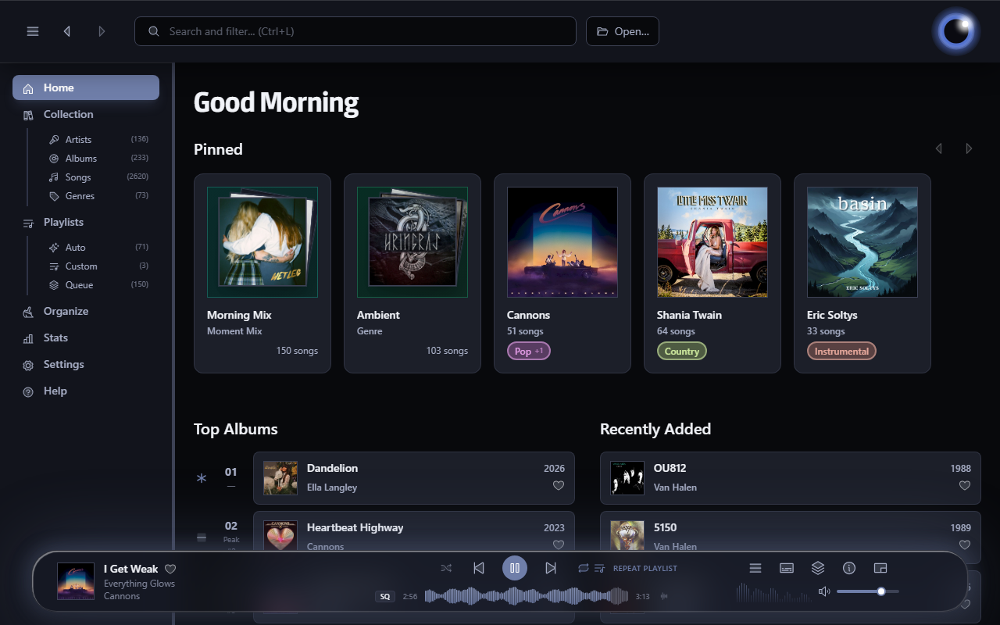
New to Luminous? You'll be introduced with a walkthrough of the interface. The tour ends on Home, and you can replay it anytime you want from the Help section.
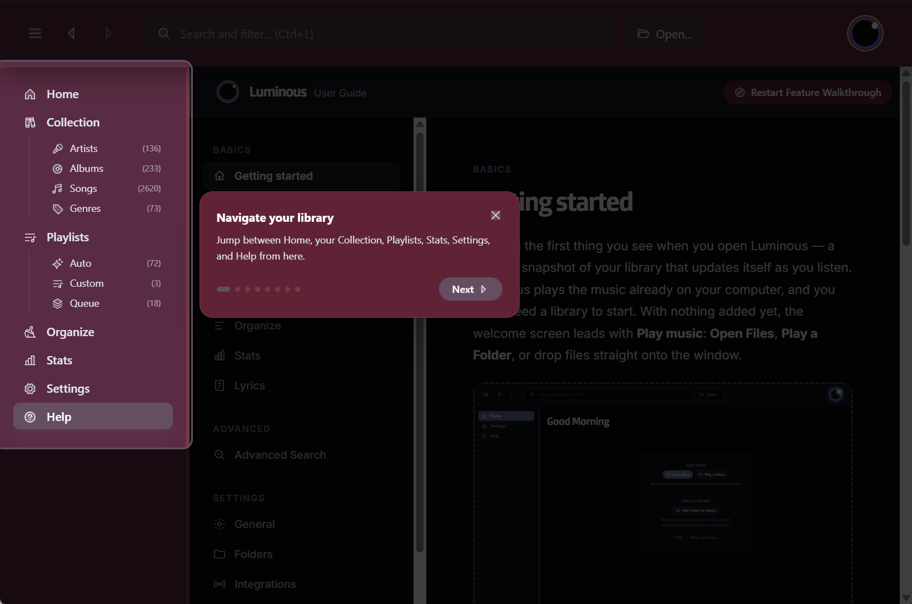
Basics
Your collection
Collection in the sidebar expands into four views — Artists, Albums, Songs, and Genres — each showing a running count and a Sort control in the top-right:
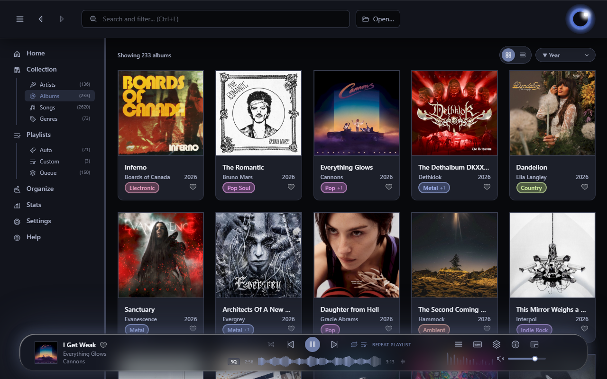
The Songs view lists your whole library as a sortable table. Click Columns to add or remove which fields are shown — including Play Count and Skip Count, if you want a look at your own listening habits.
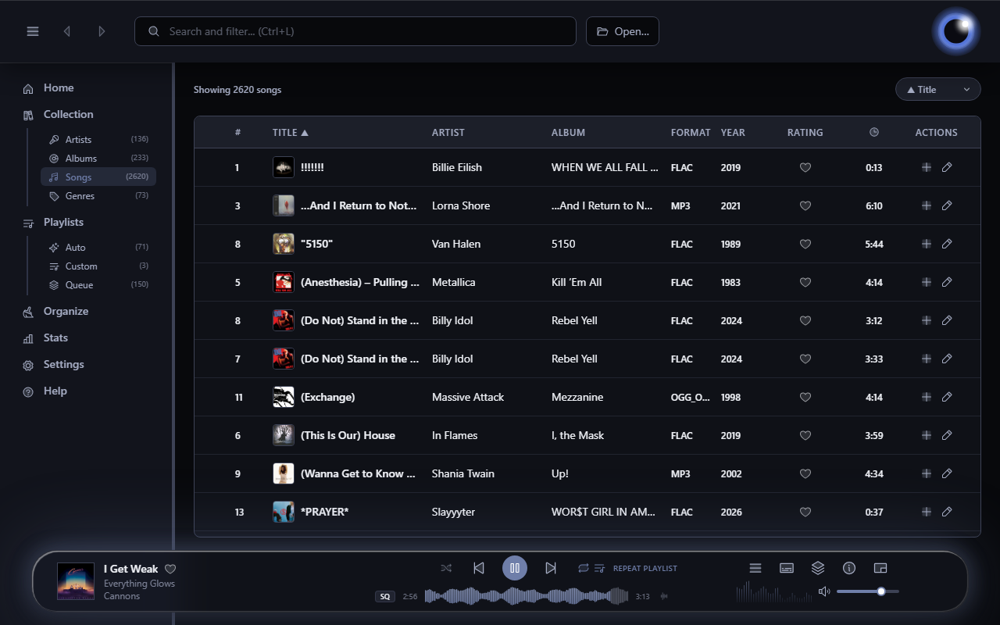
Genres in Collection groups every tag in your library into customizable cards with distinct color accents. A card's song count automatically rolls up all tracks from both the parent genre and its subgenres.
•
Curate hierarchy with drag-and-drop: Drag a subgenre chip onto another card to re-parent it, drag within a card to reorder, or grab a card's handle to demote the entire genre into a subgenre.
•
Quick tag actions: Right-click any chip or card header to Rename, Promote to top-level genre, or Delete the tag from all tracks. Click a card's color swatch to customize its accent color.
•
Instant playlist playback: Click any genre card or subgenre chip to open its curated Auto Playlist — complete with Play All, Shuffle, filter search, and population modes (All, Favourites, Essentials, Discover, Deep Cuts).
•
Card & Row views: Toggle between the visual card grid and compact rows, or switch to the flat Tags view in the top-right to browse an interactive tag cloud sized by song count.
•
Bulk tag management: Click Select Tags to select multiple tags at once to Merge Selected into a single name or Delete Selected in batch.
•
Untagged music: Tracks without genre metadata appear in a dedicated No Genre group at the bottom, making it easy to find and tag them.
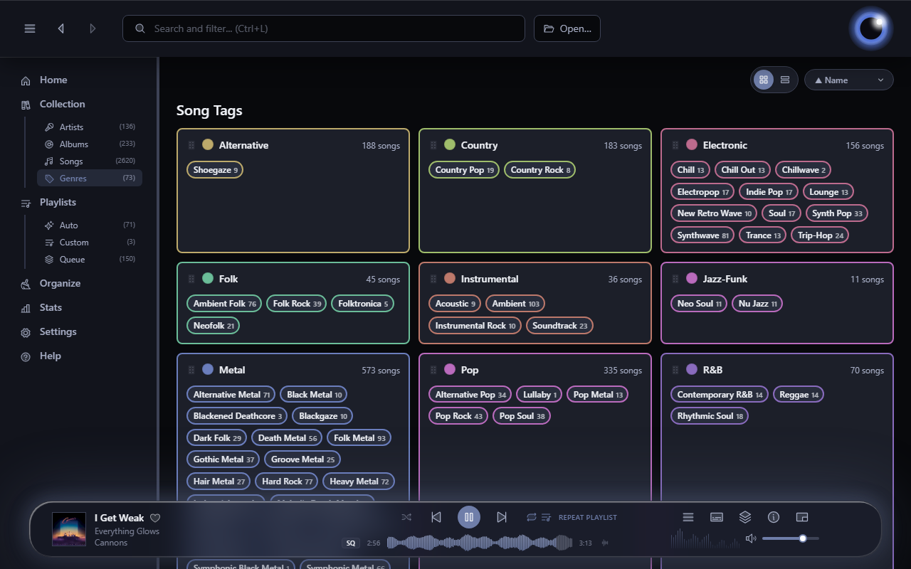
Open an album to see its full tracklist, plus a side panel with the file details for whatever song is currently playing — format, bitrate, sample rate, and loudness. Play all starts at track one; Shuffle and play randomizes the order; the + button adds that album or song to the active playlist — the Queue, by default.
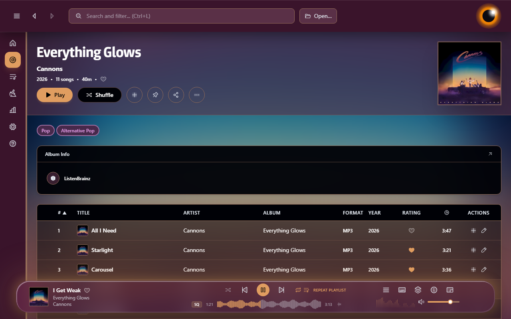
Click the pencil icon next to Play all to open Edit Album Tags — fix the title, artist, genre, or release year for every track on the album at once. The same editor is available per-track from the row's own pencil icon.
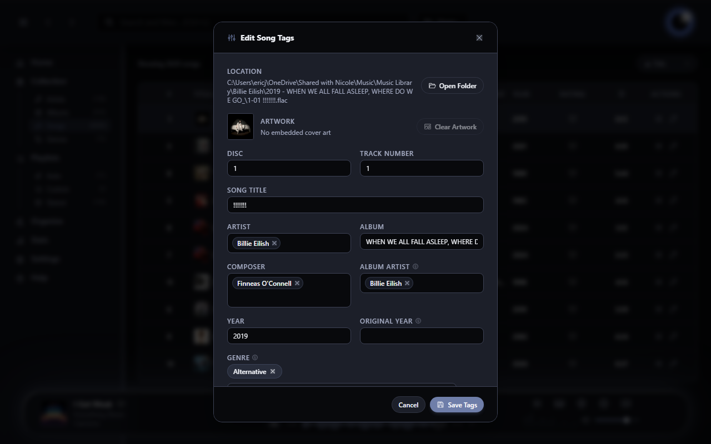
Artist, Album Artist, Composer, and Genre all accept multiple values — press Enter after each one to add it, and Luminous keeps them as distinct, separately-searchable tags rather than one long string. Each of these fields (plus Title and Album) also has its own Sort As field, so you can file "The Beatles" under "Beatles, The" or a genre like "Gothic Metal" under a broader "Metal" without changing the tag itself. Luminous also reads legacy ID3v1 tags on older MP3s, and Clear Artwork removes embedded cover art from a track in one click.
An artist page groups their work into Albums, EPs, and Singles under a Discography tab strip. Below the Discography is any playlists that include the artist. Click Edit to add a bio, official website, and links to Bandcamp, Spotify, Instagram, and other platforms — they show up as an About panel with clickable links right on the artist page.
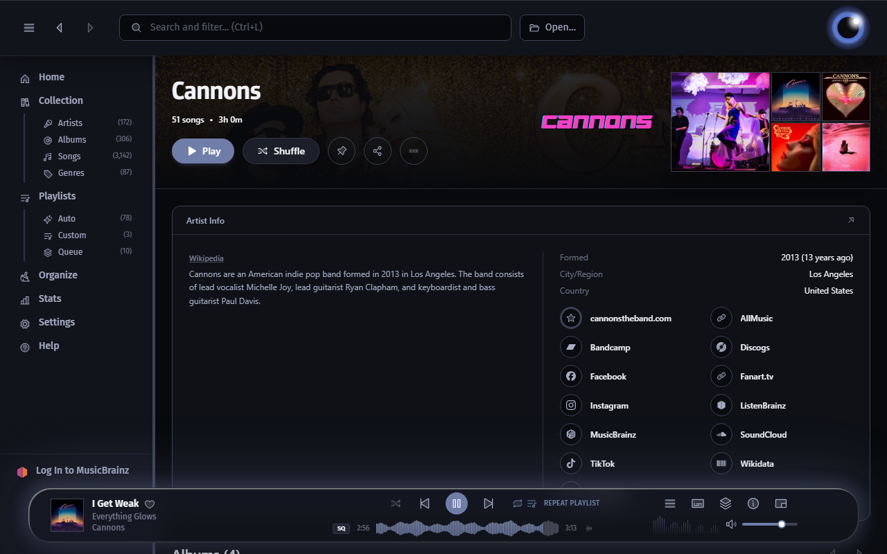
Basics
Search & browsing
The search bar at the top of the window looks across songs, albums, and artists at once — you never have to think about where something is filed before you go looking for it.
•
The Luminous logo reacts to music playing — click it to toggle this on or off.
1
Press CtrlL (or click the search bar) from anywhere in Luminous.
2
Start typing — matching songs, albums, artists, and playlists appear as you go.
3
The back and forward arrows beside the search bar step through wherever you've navigated, just like a browser.
4
Click Open… (or press CtrlO) to play files from anywhere on your computer.
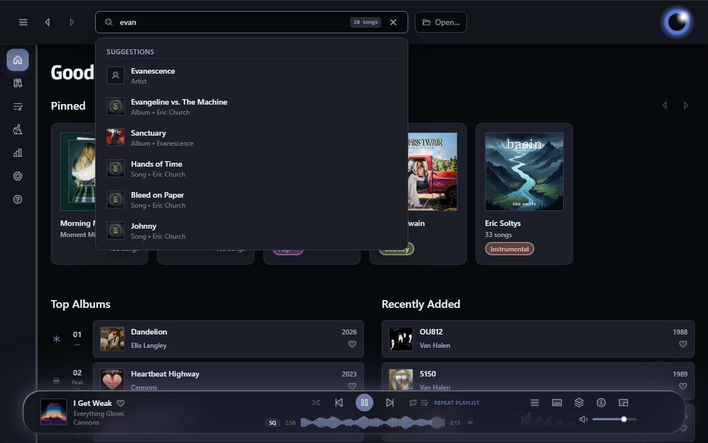
Basics
Now Playing & the mini player
A player bar sits at the bottom of the window when you're playing a song, with the waveform, transport controls, volume, and a shortcut into the full Now Playing view.
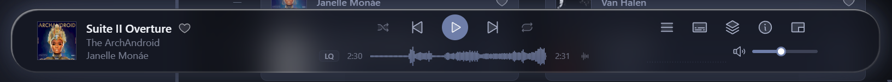
Click the album cover art in the player bar to toggle Immersive Mode (Ctrl2 also works).
•
Click the heart to favourite a song, or give it a 1–5 star rating, depending on your settings.
•
Play/pause, skip, and volume media keys work even when Luminous isn't the focused window, and playback shows up in your system's own media controls — so you can see and steer it without switching back.
•
Click Shuffle to cycle through five modes:
Shuffle All: play all tracks in a randomized order.
Shuffle Inside Album: play albums in their normal order, but randomize the tracks within each album.
Shuffle Albums: play albums in a randomized order, but keep the tracks within each album in order.
Shuffle Artists: play all tracks by an artist before moving to a new, randomly selected artist.
Shuffle Off: play tracks in their normal sequential order.
•
Click Repeat to cycle through four modes:
Repeat Song: loop the current track indefinitely.
Repeat Album: loop the current album indefinitely.
Repeat Playlist: loop the current queue or playlist indefinitely.
Repeat Off: play through the current queue normally and stop at the end.
•
Click the waveform to jump to a different point in the song.
•
A small spectrum display next to the volume control gives you a live look at the song's frequencies as it plays.
•
Click the icon next to the waveform to toggle showing Frequency Bands instead. It layers all three bands at once — blue for low (bass), amber for mid (vocals/snares/leads), white for high (hi-hats/cymbals/transients) — with taller bands carrying more energy.
•
Five icons sit on the right side of the player bar: a menu of quick actions for the current song, a lyrics toggle, a shortcut to the Queue, the info panel toggle, and the mini player switch.
•
The "info" icon shows or hides the right-side info panel. Its shortcut is CtrlI (or Ctrl3).
•
The mini player icon on the far right pops the player out into a small floating mini player — handy for keeping an eye on playback while you work in other apps. CtrlM toggles it from anywhere.
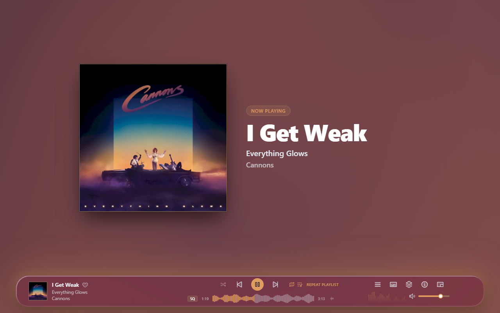
Mini player, resting
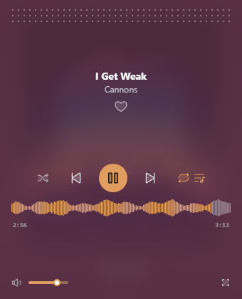
Mini player, on hover
•
Hover over the mini player to reveal its playback and window controls. You can rate the song.
•
Move the mini player by grabbing anywhere along the top.
•
Drag the volume slider in the bottom-left to adjust playback volume.
•
Toggle between album artwork and synchronized live lyrics using the lyrics button in the bottom controls.
•
Restore Full Window (CtrlM) in the bottom-right.
Basics
Playlists
If you click the + next to a song or album, it goes to your Queue playlist by default. Making a new playlist you want to add to instead? Mark it Active first, and anything you + after that lands there instead.
There are three kinds: the ones you build by hand, smart ones Luminous keeps filled from a rule you set, and Auto Playlists it builds and refreshes on its own.
•
Custom: create a playlist, name it, then drag songs in from anywhere in your collection.
•
Smart: set a rule like "Genre is Rock and Year is after 2015" and Luminous keeps it up to date as your collection grows.
•
Auto: Genre, Decade, and BPM playlists build themselves from your library and refresh daily with up to 25 tracks — each only shows up once it has at least 25 matching songs. Click one to browse its tracks, or hit Refresh anytime for a new selection.
BPM playlists sort songs into five fixed tempo categories using each song's BPM tag:
Category
BPM range
Down-Tempo BPM
60–90
Mid-Tempo BPM
90–115
Uptempo BPM
115–130
High Energy BPM
130–150
Extreme BPM
150+
Luminous doesn't calculate BPM itself — it reads the BPM tag already on each file. Add BPM tags with the Tag Editor or your tagging tool of choice; songs without one won't land in any category. You can make your own BPM categories with Smart Playlists.
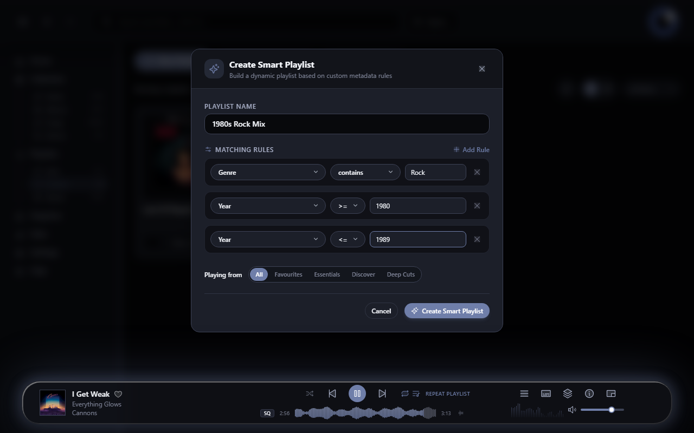
Editing a smart rule
You can also drag audio files or a whole folder straight onto the Luminous window to play or queue them — drop normally to replace the Queue and start playing, or hold Shift while dropping to append to the end of the Queue instead.
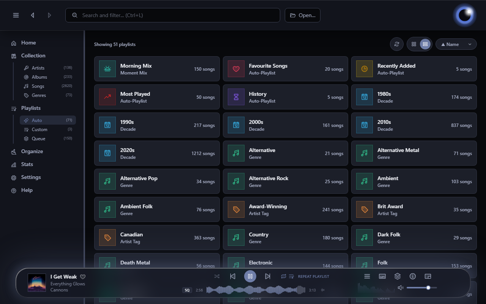
Auto Playlist tile
Managing a playlist
•
Double-click a playlist's name (or use its pencil icon) to rename it inline.
•
Drag rows to reorder a playlist — select several first to move them as a group. Click a column header to sort by it, or use the search field above the tracklist to filter down to matching songs.
•
Remove Duplicates and Remove Unavailable Tracks tidy a playlist in one click; Clear Playlist empties it; Delete Playlist removes it for good.
•
Queue and playlist tables can show a Date Added column via the column picker, alongside the others already there — handy for sorting a playlist by how recently each track landed in it.
Import & export
•
Bring in playlists from other apps, or send yours elsewhere, as .m3u, .m3u8, .pls, or .xspf.
•
Exporting offers a Relative Paths option, so the playlist still works after you move it to another folder or computer.
Basics
Stats
Stats in the sidebar shows your listening habits — computed entirely on your own machine from your local play history, never sent anywhere. Switch between Past 7 Days, Past 28 Days, and Past Year to change the window.
•
Top Artists, Top Albums, Top Songs, and Top Genres rank what you've actually played in the selected range. Click any entry to jump straight to it.
•
A calendar heatmap tracks daily listening minutes, alongside your Current Streak and Longest Streak of consecutive listening days.
•
Time of Day breaks your listening into Morning, Afternoon, Evening, and Late Night, so you can see when you actually listen.
•
Don't want a song, album, artist, or genre skewing your numbers? Right-click it anywhere in your collection and choose Don't Include in Stats — reverse it later with the same menu.
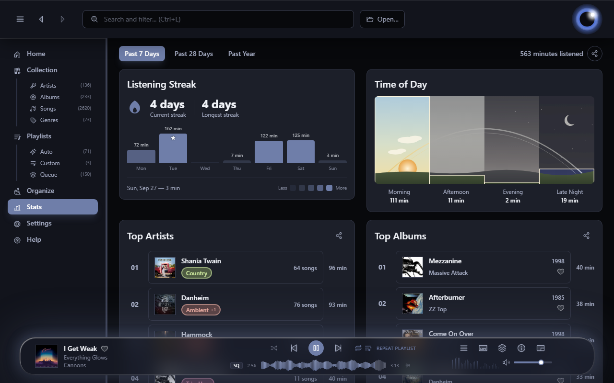
Basics
Lyrics
Toggle Lyrics from the player bar to follow along with whatever's playing — the current line highlights in sync with the music, with the rest dimmed above and below it. Luminous automatically looks up lyrics for the currently playing song; if it's an instrumental, you can mark it as such so Luminous stops looking.
•
If lyrics haven't been found yet, click Refetch to look them up again.
•
Timing off, or a line wrong? Edit lets you correct the text or nudge the sync yourself.
•
Not all lyrics come with timestamps — when they don't, Luminous shows plain text lyrics instead.
•
Click any line in the lyrics to jump to that point in the song.
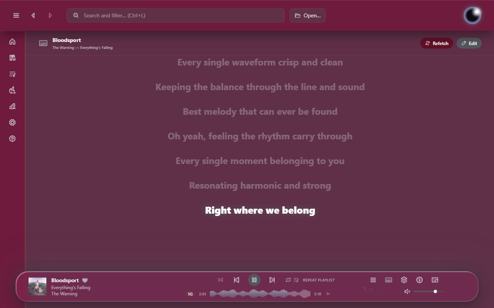
Advanced
Advanced Search
Typing field:value terms into the search bar turns a normal search into a precise filter across your whole library — no separate advanced-search screen to open. For example, genre:rock rating:>=4 finds rock songs you've rated 4 stars or higher.
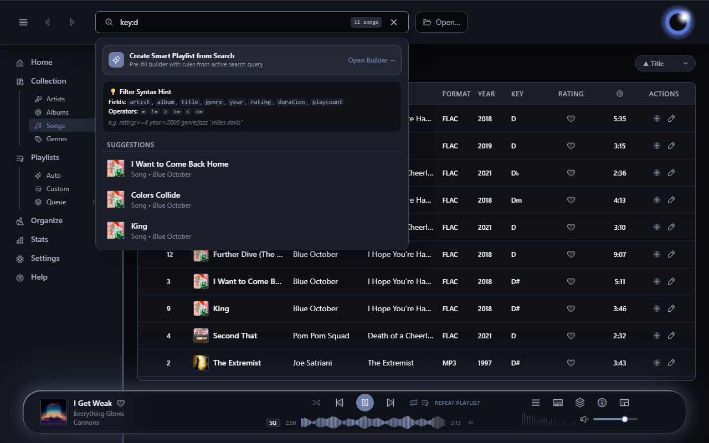
Syntax
•
No operator on a text field (artist, album, genre…) means contains: genre:rock matches any genre containing "rock".
•
No operator on a numeric field (year, rating, bpm…) means exact match: year:1994 matches only 1994.
•
Multiple terms are combined with AND: rating:>=4 year:<2000 genre:rock — songs rated 4+ stars, released before 2000, in a genre containing "rock".
•
Bare words with no colon are free-text and OR'd against title/artist/album — mix them freely: rating:>=4 "tom cochrane".
•
Wrap a value with spaces in quotes: artist:"tom cochrane". Field names are case-insensitive.
Operators
Symbol
Meaning
=
equals
!=
not equal
>
greater than
>=
greater than or equal
<
less than
<=
less than or equal
(none)
contains (text) / equals (numeric)
Field reference
Every field below works in the search bar and as a rule in the Smart Playlist Builder. The in-app "Filter Syntax Hint" popup only shows a short illustrative subset — this is the full list.
Field (aliases)
Type
Matches
artist
text
Artist (falls back to Album Artist)
artist_tag
text
Artist Tag
album_artist
text
Album Artist only
album
text
Album title
title
text
Track title
genre
text
Genre
composer
text
Composer
key / initial_key
text
Musical key (e.g. "D", "Am", "D♭")
bpm
number
Beats per minute
year
number
Release year
originalyear / original_year
number
Original release year (vs. reissue)
rating / stars
number
Star rating, 0–5
playcount / plays
number
Times played
skipcount / skips
number
Times skipped
lastplayed / last_played
number
Last-played timestamp (Unix seconds)
added
number
Date-added timestamp (Unix seconds)
track / track_number
number
Track number
disc / disc_number
number
Disc number
bitrate
number
Bitrate (kbps)
samplerate / sample_rate
number
Sample rate (Hz)
bitdepth / bit_depth
number
Bit depth
channels
number
Channel count
compilation
0/1
Compilation flag
duration / length
duration
Track length — see below
Duration values
The duration/length field accepts plain seconds (duration:>180), MM:SS (duration:>3:30), or H:MM:SS (duration:<1:02:03).
Create Smart Playlist from Search
Once your query has at least one field:value term, a Create Smart Playlist from Search card appears at the top of the dropdown. Click Open Builder → to open the Smart Playlist modal with each term already added as a rule — from there you can add more rules, name the playlist, and save.
Worked examples
Goal
Query
Rock songs rated 4+ stars from before 2000
rating:>=4 year:<2000 genre:rock
Songs in the key of D
key:d
High-tempo tracks (120–130 BPM)
bpm:>=120 bpm:<=130
Free-text + field mix
rating:>=4 "tom cochrane"
Compilation albums only
compilation:1
Tracks over 3:30
duration:>3:30
Settings
General
App-wide preferences — things like startup behavior and other everyday defaults live here.
•
Language: switch the interface between English and French.
•
Rating style: choose whether songs are rated with a heart, or a 1–5 star scale — this is the setting the Now Playing section mentions.
•
Start the week with: Sunday or Monday. Choose which day charts and weekly stats treat as the start of the week.
•
Minimize to tray: when enabled, closing the window hides Luminous to the system tray instead of quitting. The tray icon's own right-click menu offers Play/Pause, Next, and Previous, so you can control playback without bringing the window back at all.
•
Launch at login: Starts Luminous automatically when you sign in.
•
Data Storage Location & Portable Mode: shows where Luminous stores your library database (luminous.db), cover art cache, and preferences. Standalone Windows ZIP editions run in portable mode by default, keeping all data inside a data folder next to the executable so you can carry your player on external USB drives. On Linux, AppImages use the standard system location by default, and can be switched to portable mode by placing an empty portable marker file next to the AppImage.
•
App & Updates: check for updates on demand and see your installed version. Which notifications and features depend upon how Luminous was installed. Microsoft Store installations will manage updates for you automatically.
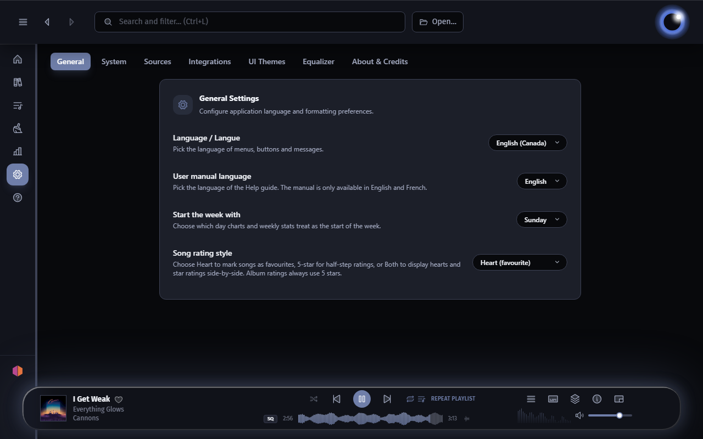
Settings
Sources
Add or remove the folders Luminous watches for music. Once a folder's added, it stays watched — new files show up on their own, no rescan needed.
•
Watch folders in real time toggles whether Luminous watches live for changes, or only checks when you ask it to.
•
Rescan on startup has Luminous check your folders every time it launches.
•
Incremental Rescan looks only for what's changed; Force Full Scan re-reads everything from scratch. Both show live progress as they run.
•
Save artwork next to your music writes extracted embedded covers and downloaded iTunes artwork directly into your album folders as cover.jpg, and fetched artist photos into artist folders as artist.jpg. Off by default, this keeps artwork portable across other players and reinstalls without modifying existing folder art.
•
A stats panel shows when your library was last scanned, plus running counts of songs, albums, artists, and total size.
•
You can also add remote media servers as a source to stream music across your network:
– WebDAV: An HTTP-based file protocol supported by cloud storage services and personal NAS units (such as Nextcloud, ownCloud, or Synology). It lets Luminous stream your remote audio files directly without needing to mount a network drive.
– OpenSubsonic: A popular open API standard for self-hosted music servers like Navidrome, Gonic, LMS, or Subsonic. Luminous syncs your server's library, streams music over the network, and can report your scrobbles and play counts back to the server.
Remote folders and servers are strictly read-only — any tag edits, artwork tweaks, or organizing you do stay local to Luminous and are never written back to the server.
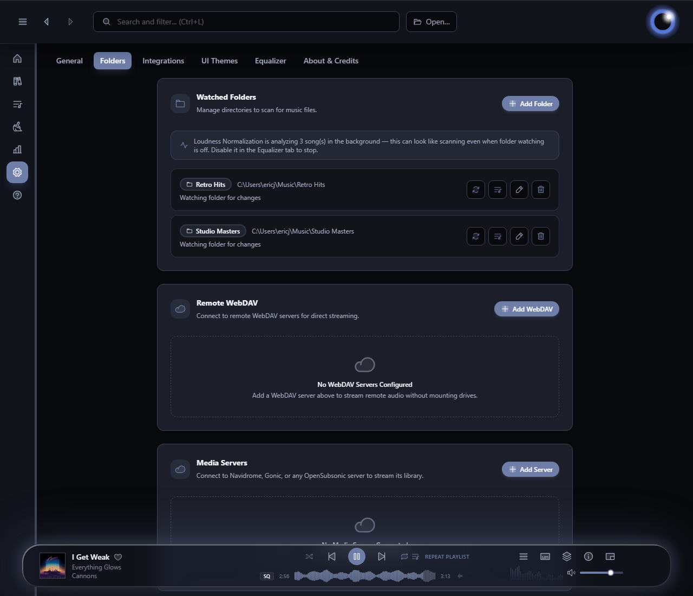
Settings
Integrations
Settings → Integrations connects Luminous to a few outside tools and services — each is optional, and each can be turned off to keep that part of Luminous fully offline.
•
Online Data Sources: feeds the Info Panel and artist pages with ratings, tags, reviews, and bios looked up from MusicBrainz, CritiqueBrainz, and Wikipedia. Turn Fetch context & bio data off to keep this fully offline.
•
ListenBrainz Scrobbler: paste in a ListenBrainz user token and click Validate & Save to connect your account. Once connected, toggle scrobbling on, and choose separately whether to scrobble now playing status and ratings — with ratings enabled, a one-time Sync Favourites button sends your existing favourites over too.
•
Pause all scrobbling stops sending the songs you've listened to without disconnecting your account. Songs played while you're offline queue up locally and send with Sync Now once you're back online.
•
MusicBrainz Picard: Luminous detects an existing Picard install automatically and shows where it found it, or lets you point at a custom path — handy for jumping into Picard's own tagging tools on a file without leaving Luminous.
•
Discord Rich Presence: shows what you're playing on your Discord profile, with optional album name and a live progress timer. Requires the Discord desktop app to be running.
•
fanart.tv: fetches artist portraits when none are found locally. Add your own API key, then click Validate & Save. Without a key, Luminous falls back to the artist's Wikidata image, if there is one.
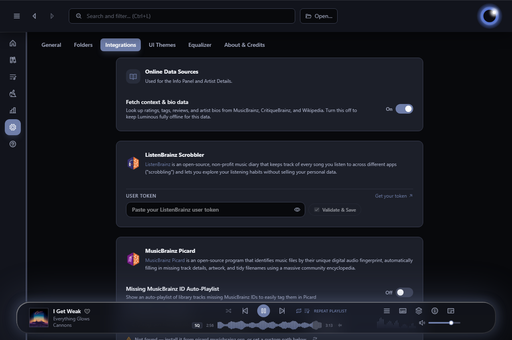
Basics
Organize
Bulk tools for renaming and relocating your library files based on their tags.
Preview
The list always shows just the files that would actually move, each with a status and a From → To path, plus a ready/unchanged count with a Common Base Path line just below it. Nothing happens until you commit with Organize Music.
Template pattern
Pick a preset card — Default or Alternative — or choose Custom to write your own pattern with the free-text field and variable chips below it. A live tree preview updates underneath as you pick, showing artist → album → tracks with sample data so you can see the effect right away.
Destination & options
Choose a destination with a two-way toggle: Original Library Folder(s) reorganizes files in place, or switch to Custom... to reveal a folder path field and Browse button. Below that, three toggles let you move companion files (artwork, lyrics, logs, cue sheets) along with the tracks, replace spaces with underscores, and change accented letters and punctuation.
Clean Up, at the bottom of the page, removes missing songs, empty folders, and duplicate entries in one click.
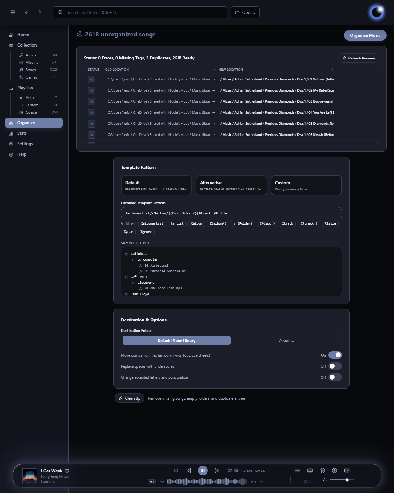
File naming variables
Build a naming or folder pattern by combining these variables with your own spaces and text. Wrap a piece in { } to make it optional — it's skipped when the track has no value for it. A trailing / inside the braces makes that piece a folder.
Variable
Fills in with
%albumartist
The album's primary artist
%artist
The track's artist
%album
Album title
%disc
Disc number
%track
Track number
%title
Track title
%year
Release year
%genre
Genre
%track3
Track number, padded to three digits
%rawtrack
Track number exactly as stored in the tag, no padding
Examples
%disc-%track
2-07
Disc %disc
Disc 2
%year - %album
2019 - Reservoir
{%album/}
Adds an album-name folder, only if the track has one
{%disc-}%track
Skips the "1-" when there's no disc number: 07, or 1-07
{%track }%title
Adds "07 " before the title, only if there's a track number
Settings
Equalizer
Everything here lives under Settings → Equalizer. You don't need to know anything about audio engineering to use it — the defaults sound good, and every change applies instantly, even mid-song. The panel is split into three parts: the EQ itself, loudness normalization, and playback fades — each can be tuned or left alone independently.
•
Flip Enable EQ on, then pick a preset from the dropdown — Pop, Rock, Bass Boost, Vocal, and more — or dial in your own curve. The 10-band view gives you one slider per fixed frequency. Switch to Parametric when you need precision: the graph shows the combined response, and each band is a node you drag to set its frequency and gain — scroll on a node to widen or narrow it (Q), or double-click the graph to add a band, up to 20. The list under the graph holds the same bands as numbers, with a Type for each (peak, low shelf or high shelf), a switch to bypass it, and a button to remove it. With a node selected, the arrow keys nudge it and Page Up/Down change its Q. Reset Bands snaps everything back to flat. The Preamp slider at the top raises or lowers overall gain before it hits the bands, so boosting doesn't clip; it snaps to half-decibel steps from −24 to +12 dB. Each band goes from −20 to +20 dB.
•
In Parametric, click Save as… to keep the current bands and preamp as your own preset — it appears under My presets in the dropdown, next to the built-ins. While one of your presets is selected, Rename and Delete appear beside it. Change any band and the dropdown shows Custom, so picking the preset again brings the saved version back. Luminous remembers the selected preset between sessions.
•
To correct your headphones, click Import… in Parametric. Look up your model on AutoEq (the link is in the panel), download its ParametricEQ.txt, then click Choose file… or paste the text. Luminous names the preset after your headphones, saves it under My presets and applies it right away. A profile that uses filters Luminous can't reproduce exactly, or more than 20 filters, is refused with a message saying which line is the problem, and your current settings stay as they were.
•
Loudness Normalization evens out the volume jump between quiet and loud tracks, so you're not reaching for the volume knob every other song. Set a Target Level in LUFS, and choose whether to Normalize by track (each song hits the target on its own) or album (the whole album is scaled together, preserving the mix's intended dynamics between tracks). Luminous analyzes your library in the background — a progress message shows how many tracks are left — and falls back to embedded ReplayGain tags, then a flat Fallback Gain, for anything it hasn't measured yet.
•
Fades & crossfade softens the pause/stop button with a short Fade Duration instead of an abrupt cut, and can automatically blend the tail of one song into the start of the next over a Crossfade Duration you set. Preserve Gapless for Same Album keeps crossfade from kicking in between tracks on the same album — useful for live sets, concept albums, or anything mixed to flow without a gap.
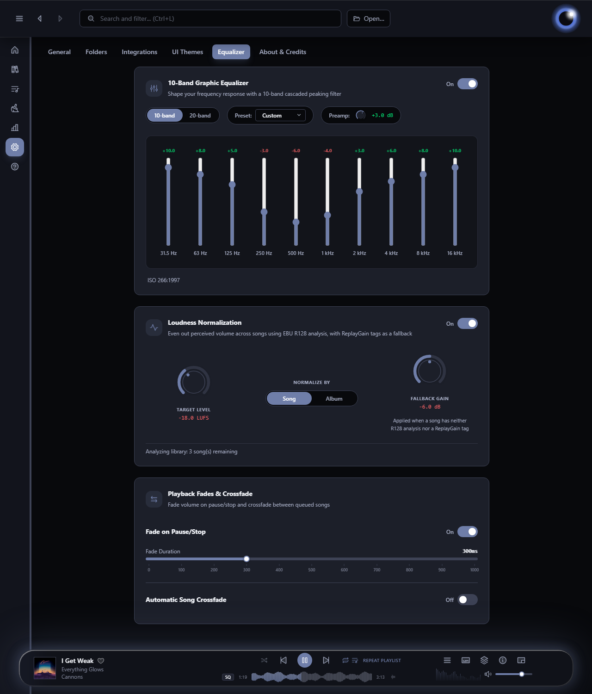
10-band graphic — one slider per fixed frequency, fastest way to shape a curve by ear.
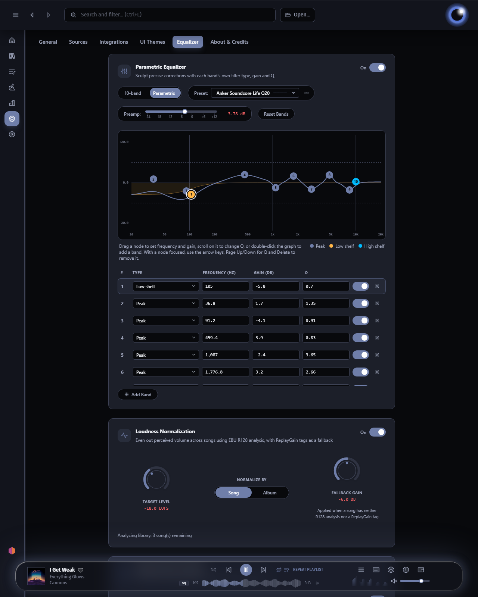
Parametric — drag bands on the graph or type exact values for surgical corrections.
Settings
UI Themes
Pick between several built-in themes, match your system's light/dark setting, or turn on Dynamic Artwork so the whole app — including Now Playing and the mini player — pulls its color from whatever album art is currently playing. The whole app updates immediately, no restart needed.
Dynamic Artwork doubles as a great way to discover new themes — when a song's artwork lands on a combination you like, save it as a Custom Theme to keep it around.
With your system's reduce-motion setting on, Luminous swaps sliding and scaling transitions for gentle fades.
Want full control? The Custom Theme Builder lets you set your own colours.
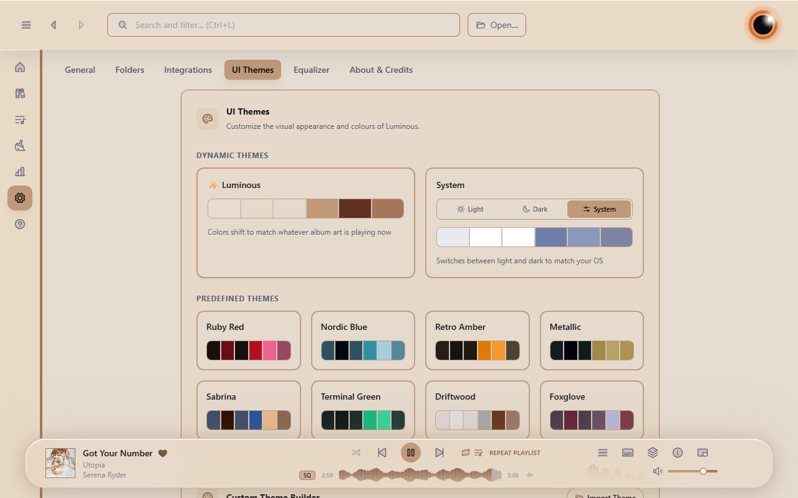
Tips & tricks
Keyboard shortcuts
Playback
Space
Play / pause
←
Previous track
→
Next track
↑
Volume up
↓
Volume down
Page Up
Seek back 10s
Page Down
Seek forward 10s
Navigation
CtrlL
Focus the search bar
Esc
Close search dropdown
CtrlO
Open song
Ctrl[
Go back
Ctrl]
Go forward
CtrlA
Select All in the current list view
Layout & view
Ctrl1
Toggle left sidebar
Ctrl2
Toggle immersion mode
Ctrl3orCtrlI
Toggle info panel
CtrlM
Toggle miniplayer
Ctrl,
Open Settings
Ctrl/
Show this list
Mouse side buttons and dedicated browser back/forward keys also navigate history. Media buttons on your keyboard or device also control playback.
Settings
About & Credits
Source available on GitHub, alongside links to CREDITS.md and LICENSE for the full list of libraries Luminous is built on and the terms it's shared under.
Under the hood: a Rust and Tauri core, a Svelte 5 interface, and dedicated libraries for decoding and analyzing audio.
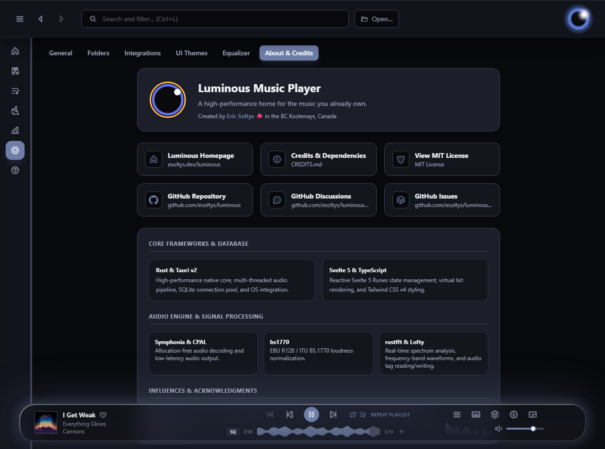
Tips & tricks
Context menus & multi-select
Most lists in Luminous support right-click menus and multi-select, so you can act on many tracks at once instead of one at a time.
•
Right-click a song or playlist row for quick actions — Play, Add to Playlist, Go to Artist/Album, Organize Files, Edit Tags, Remove.
•
Right-click an album for Play Album, Add to Queue, Edit album info, Open in Picard, Share Card…, Pin to Home, and Don't Include in Stats.
•
Shift-click to select a range, Ctrl-click to add individual rows, and CtrlA to Select All in the current list view.
•
With a selection active, a floating toolbar appears with Play Selected, Add to Playlist, and Clear Selection.